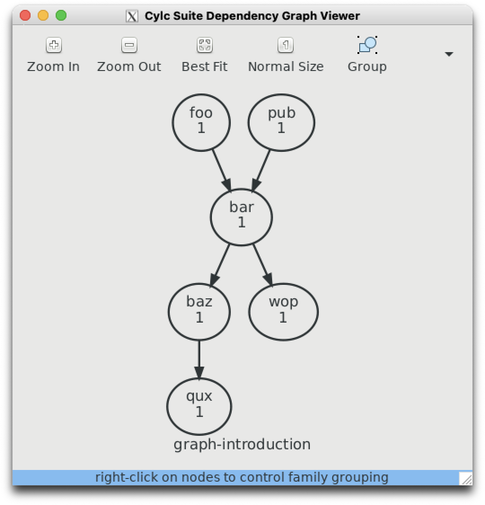

Introduction to Rose/Cylc#
Running an atmospheric simulation is a complex process which requires executing many separate tasks. In order to co-ordinate these tasks, we requirer a job scheduler, or a workflow engine.
These tutorials assume:
You have an NCI account on
gadi.You can access a command-line terminal on
gadi(either via ansshsession or using theAREresearch environment)You have, or in the process of obtaining, a UK Met Office Science Repository Service (MOSRS) account.
You have memberships to the following
gadiprojects:hr22accesski32ki32_mosrs
Shell scripts and running jobs on Linux#
Typically we run programs (or apps) on a linux computer using a shell scripts. We use the bash shell to interpret input from the command-line to execute programs.
For example, if you login to gadi and type ls -la, at the command-line you are executing the program ls with the additional arguments la. The output of the program is then directed via standard output to your terminal.
We can then create bash ‘scripts’ which allows to us process multiple inputs and to automate tasks from the command line instead of having to type everything manually. A bash script is simply a text file with a list of commands, which we give special permissions to which allow the Linux operating system to execute it as a program.
If you want more familiarity with bash, there are many on-line tutorials and references available, e.g.:
or
https://www.geeksforgeeks.org/bash-scripting-introduction-to-bash-and-bash-scripting/
You can follow those tutorials on gadi but you will need to use a different text editor to gedit as it is not installed. You can use vi if you’re familiar with it, otherwise you can use nano which will run inside a terminal window, or type nedit & to launch the nedit GUI text editor. The & tells bash to run this job ‘in background’, which allows you to continue typing inputs via the command-line while the nedit window is active.
A deeper bash reference can be found here:
https://learn.microsoft.com/en-us/training/modules/bash-introduction/
Depending on your prior experience with Linux and bash, you may want to spend a few days working through these tutorials and examples to gain a better understanding of how bash commands and bash ENVIRONMENT variables work and familiarise yourself with the Linux directory structures on gadi.
Typically you will use bash scripts to execute programs required to simulate the atmosphere, whether these programs are pre-compiled executables (e.g. the UM itself), python scripts for pre-processing or post-processing, or bash commands themselves.
When we execute programs from the command-line, we are using an ‘interactive’ session. Typically this is used for small programs that require very few resources (memory, processors, disk space) and can be executed in a few seconds or minutes. For larger tasks, a super-computer uses a batch-scheduling system whereby bash scripts are submitted to a job scheduler queue with requests for memory, processors and storage. The job scheduler then processes each jobs when resources become available.
The NCI supercomputer gadi uses the PBS job scheduler. Documentation is available here:
https://opus.nci.org.au/pages/viewpage.action?pageId=236880320
But, what if we have a complex set of tasks that must run in a particular sequence? Can we create programs which process PBS jobs in a user-specified workflow?
Task Scheduling for Atmospheric Simulation#
A good example of a complex tasks that must run in a particular sequence is a realtime atmospheric simulation (i.e. a weather forecasts). Typically for a longer, multi-day forecast, the sequence of tasks involves:
Reading the previous weather forecast data initialised some six hours ago
Collect observations valid from three hours ago, to three hours in the future
Running a perturbation forecast model with an optimisation tool to determine the initial condition which minimises the error between short-term forecasts and observations over a six hour period.
Use the optimal initial condition computed earlier to run another short term forecast. These short term forecasts which have been computed against observations are known as ‘analysis’ or ‘analyses’. They are our best estimate of the three-dimensional structure of the atmosphere at any point in time.
Repeat the analysis computation every six hours.
Every 12 hours, run a longer forecast (e.g. 7 days into future)
Repeating this process in realtime 24/7 requires the interaction of many separate tasks. We need a system which submits programs, monitors their progress, keeps track of the current time and executes each task according to an ordered set of dependencies (i.e some tasks cannot run until some upstream tasks have finished).
In order to do this, we require what is known as a workflow engine, which is a fancy name for a task scheduler.
The Cylc work engine#
Recently, the New Zealand National Institute of Water and Atmospheric Research (NIWA) developed its own task scheduler to handle its operational workflows - cylc. This scheduler was so elegant, powerful and (relatively) simple to use that it was adopted by the UK Met Office, who wrapped an external software layer - rose - around the cylc engine.
Every time you run an atmospheric simulation using the UK Met Office Unifed Model (UM), you will be using cylc.
When we refer to rose/cylc, we are referring to a rose framework (which constitutes various GUI tools, scripts and namelists) which launch the cylc workflow engine.
To understand how cylc works, visit the documentation here:
https://cylc.github.io/cylc-doc/7.9.3/html/index.html
Note the gadi is still using an earlier version of cylc (7.9.3) so make sure you select the correct version. The latest version of cylc (8.3.4) contains some significant differences.
First cylc tutorial#
Let’s run through the tutorial here:
https://cylc.github.io/cylc-doc/7.9.3/html/tutorial.html
To launch cylc on gadi you need to load the cylc software into your interactive command-line session. Execute the following commands from your gadi terminal:
module use /g/data/hr22/modulefiles
module load cylc7/23.09
This should generate the following output:
Loading cylc7/23.09
Loading requirement: mosrs-setup/1.0.1
Follow the instructions in section 7.6 - 7.9 of the tutorial. Begin with
$ cylc import-examples /tmp
This will create a list of cylc examples files in
~/cylc-run/examples
Remember ~ is a short-cut which refers to your home directory on gadi.
All your future rose/cylc tasks to run the UM will also be deployed in your ~/cylc-run directory.
Let’s run the ‘Hello World’ example. Go to the following path in ~/cylc-run directory (the path is actually different to the official documentation):
cd ~/cylc-run/examples/7.9.7/tutorial/oneoff/basic
Using a text editor of your choice (vi, nedit, nano, emacs, Microsoft VS Code), copy the contents from the tutorial into a file named suite.rc.
Once complete, if you examine the contents of this file using the bash command-line program more, it should resemble this:
$ more suite.rc
[meta]
title = "The cylc Hello World! suite"
[scheduling]
[[dependencies]]
graph = "hello"
[runtime]
[[hello]]
script = "sleep 10; echo Hello World!"
Ok, let’s run this from the command line. Your output should contain the following.
$ cylc run
Loading cylc7/23.09
Loading requirement: mosrs-setup/1.0.1
._.
| | The Cylc Suite Engine [7.9.7]
._____._. ._| |_____. Copyright (C) 2008-2019 NIWA
| .___| | | | | .___| & British Crown (Met Office) & Contributors.
| !___| !_! | | !___. _ _ _ _ _ _ _ _ _ _ _ _ _ _ _ _ _ _ _ _ _ _ _ _
!_____!___. |_!_____! This program comes with ABSOLUTELY NO WARRANTY;
.___! | see `cylc warranty`. It is free software, you
!_____! are welcome to redistribute it under certain
*** listening on https://pgregory.pag548.gb02.ps.gadi.nci.org.au:43080/ ***
To view suite server program contact information:
$ cylc get-suite-contact basic
Congratulations! You’ve just run your first cylc suite.
Second cylc tutorial#
Let’s move onto another cylc tutorial, which is located in the rose documentation. This tutorial deals with creating graphs, i.e. how we dictate the sequence in which tasks are run. The version of rose currently running supported on gadi for ACCESS-UM experiments is 2019.01.7 so make sure you using the following URL :
https://metomi.github.io/rose/2019.01.8/html/tutorial/cylc/scheduling/graphing.html
Let’s follow the instructions at the bottom of the page.
Remember!! we have to use the following module use and module load commands to add rose and cylc to our paths on gadi, in case you are starting this tutorial from a fresh login session.
module use /g/data/hr22/modulefiles
module load cylc7/23.09
Back to the tutorial:
mkdir ~/cylc-run/graph-introduction
cd ~/cylc-run/graph-introduction
Create a suite.rc file in this directory using the template provided, and then create a task graph using the necessary syntax. When you execute
cylc graph .
the results show match the below image.

https://metomi.github.io/rose/2019.01.8/html/tutorial/rose/applications.html
What is the link wit